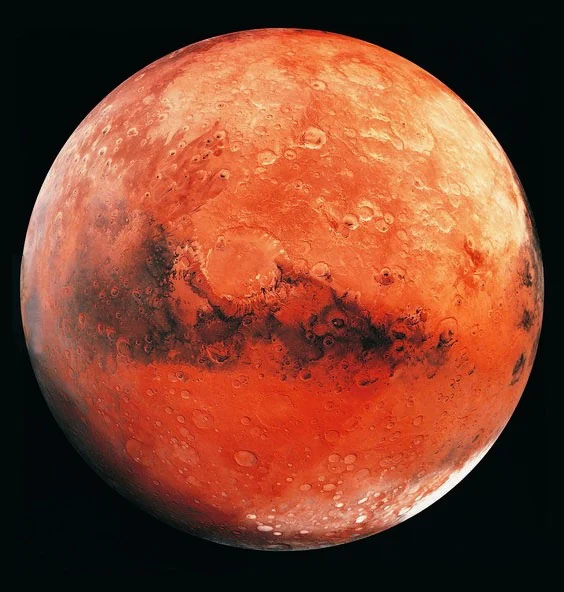

内行星/类地行星
内行星主要由岩石组成，包括水星、金星、地球和火星。
水星
离太阳最近的行星

金星
地球的"姐妹"行星

地球
我们的家园

火星
红色行星
外行星（气态巨行星和冰巨行星）
外行星是由气体组成的大型行星，包括木星、土星、天王星和海王星。

木星
最大的行星

土星
以环系闻名

天王星
倾斜的行星

海王星
风速最大的行星
水星
水星是太阳系最小且离太阳最近的行星。它没有卫星和明显的大气层。
距离太阳
0.39 天文单位
公转周期
88 天
直径
4,879 千米
卫星数量
0
金星
Venus is the second planet in our solar system and the closest planetary neighbor to Earth.
距离太阳
0.72 天文单位
公转周期
225 days
地球
The Earth is the third planet in our solar system and the only celestial body where life is known to exist.
距离太阳
1.00 天文单位
公转周期
365.25 天